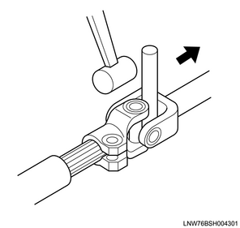
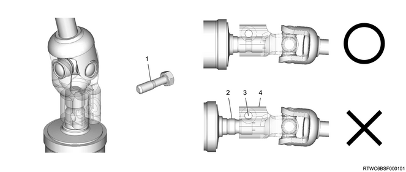

Removal of the universal joint section
When removing the steering shaft and the universal joint section, be careful with the following precautions.
Caution
- If the slit is forcibly opened using a screwdriver or chisel, the joint may be deformed, causing an uncomfortable feeling in the handle operation. Therefore, do not forcibly open the slit to prevent the shaft from being damaged when removing the universal joint.
- If it is difficult to remove the universal joint due to rust, etc., insert a metal rod in the gaps of the joint as shown in the diagram, and remove the universal joint by gently tapping it in the shaft direction.

Installation of the universal joint
When installing the steering shaft and the universal joint section, be careful with the following precautions.
Caution
- Align the position where the universal joint installation bolt crosses the groove sections of the steering unit shaft with the position of the bolt hole of the universal joint, insert the key bolt while keeping the state, and temporarily tighten it manually.
- Make sure to align the position before inserting the key bolt into the bolt hole.
- If significant rust, flaws or damage are found on the key bolt or the spring washer, replace them with new ones.
- Make sure to visually confirm that the serrated part towards the back side cannot be seen as shown in the diagram after tightening the key bolt to the specified torque.

- Key bolt
- Serrated axle
- Key bolt hole
- Yoke
Installation of the steering unit and the steering shaft
For vehicles equipped with an SRS airbag, take note of the following instructions when connecting the steering unit and the steering shaft.
Caution
- When assembling the parts around the steering shaft and steering unit, it is necessary to align the positions of the rotation center of the steering shaft and the stroke center of the steering unit with the vehicle (wheels positioned straight forward). If they are assembled without aligning the positions, the harness of the SRS coil may become damaged.